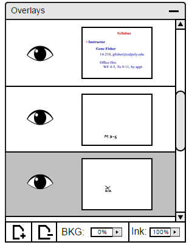
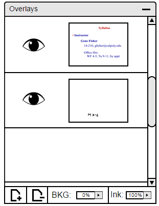
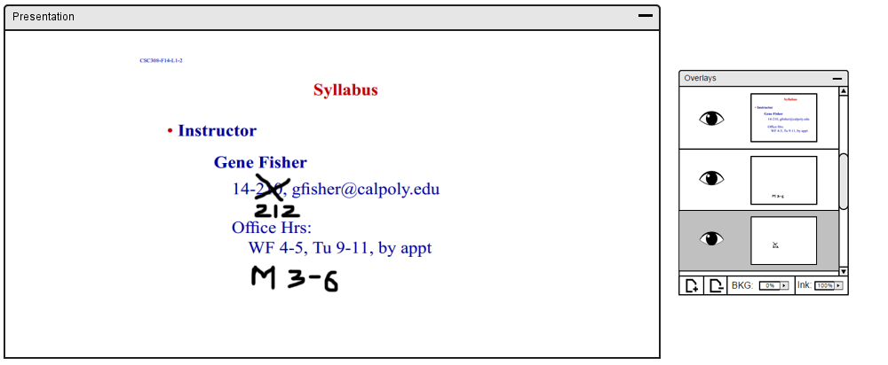

2.5.2.2. Deleting a Layer
To delete a layer off the panel, user clicks on the layer user wants to delete. Once selected, the layer box will turn gray like indicated in Figure 3.

Figure 1: Main view.
Once the layer the user wants to delete is selected, the user needs to click on the '-' button at the bottom left corner of the panel as shown in Figure 3.
Once the '-' is clicked, the layer you want to selected will be deleted as shown in Figure 4.

Figure 2: Deleted Layer view.
Figure 3 and 4 displays the deletion through the slide.

Figure 3: Layer/Slide Interaction before Deletion.

Figure 4: Layer/Slide Interaction after Deletion.
Prev: adding-layer
| Next: layer-visibility
| Up: layers
| Top: index